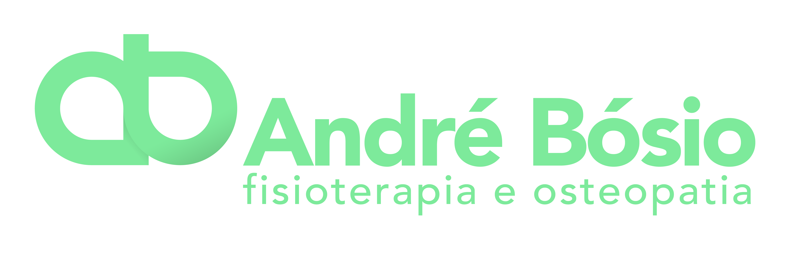
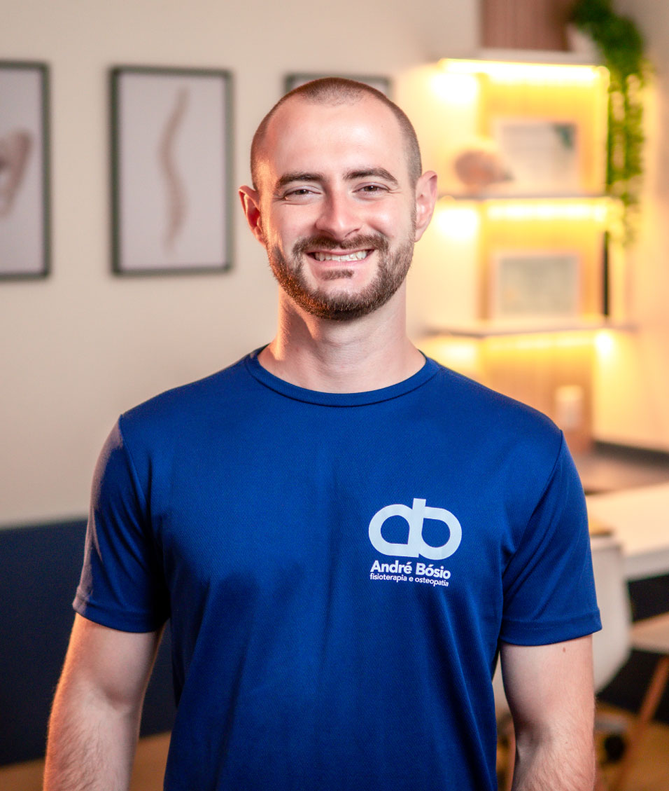
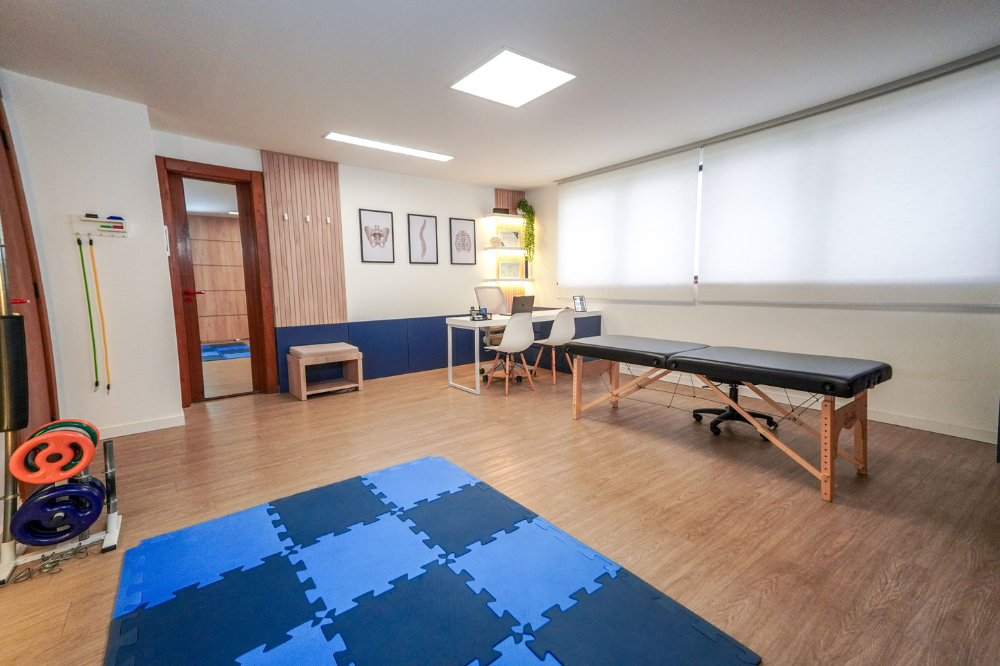
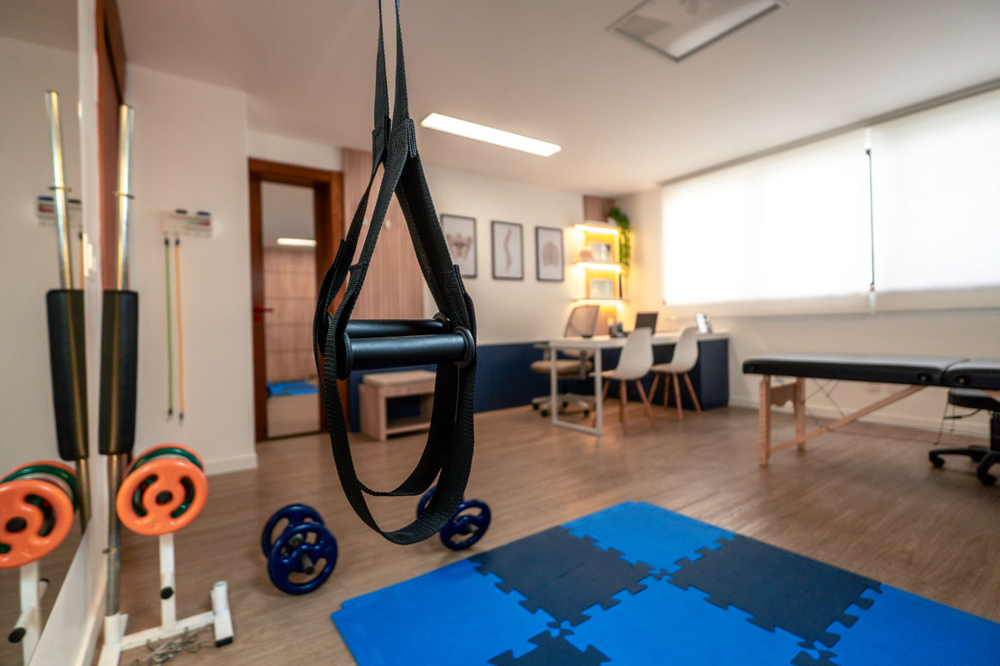
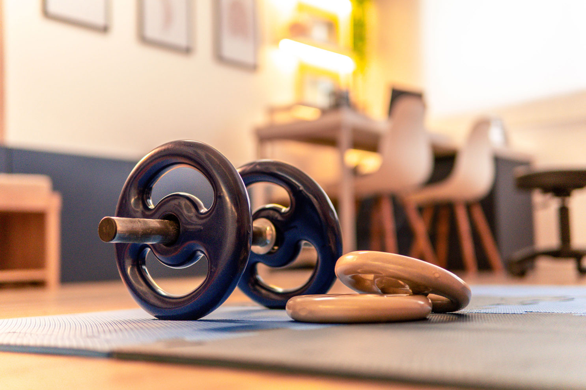
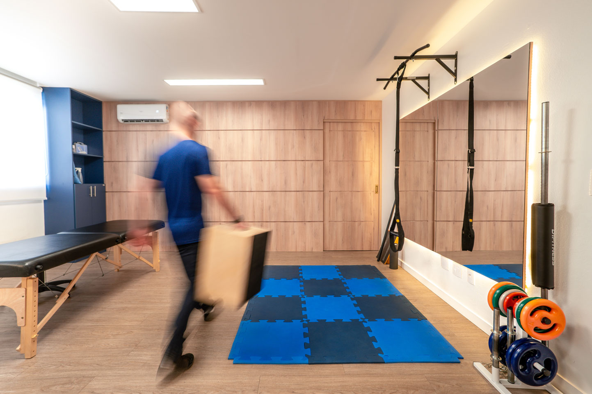

Te ajudo a superar a dor, se movimentar melhor e viver em equilíbrio.

Quem Sou Eu
Sou André Bósio, fisioterapeuta formado pela UFRGS e osteopata pelo IBO. Tenho paixão por ajudar pessoas a viverem com mais saúde e qualidade de vida.
Me dedico a entender a história e a origem das dores de cada paciente, tratando não apenas os sintomas, mas a causa do problema através de um olhar sistêmico e detalhado.
Minha Abordagem
Acredito em uma abordagem de tratamento integrada e humanizada. Utilizo técnicas manuais da osteopatia e os recursos da fisioterapia para criar um plano de tratamento único e eficaz para você.
Tratamentos Especializados
Conheça as abordagens que utilizo para cuidar da sua saúde e bem-estar.
Osteopatia
Abordagem que utiliza técnicas manuais para identificar e corrigir disfunções de mobilidade, restabelecendo o equilíbrio e a capacidade de auto-cura do organismo.
Fisioterapia
Ciência que estuda e trata as disfunções do movimento humano. Reabilita lesões e alivia dores através de exercícios e técnicas terapêuticas especializadas.
Local de Atendimento
Um espaço moderno e acolhedor no bairro Petrópolis em Porto Alegre.
Ambiente climatizado e infraestrutura completa para sua reabilitação.




O que os pacientes falam
"Profissional muito atencioso e competente! Resolveu queixa de constipação com terapia manual. Me surpreendi com a eficácia!"
"Excelente profissional! Atencioso, didático e interessado no paciente. Tratamento objetivo, passa muita segurança. Recomendo muito."
"Profissional incrível! Resolveu minhas dores cervicais e desconfortos musculares. Muito resolutivo e eficiente."
Dúvidas Frequentes
A Osteopatia foca no diagnóstico e tratamento de disfunções de mobilidade através de técnicas manuais, buscando a causa raiz. A Fisioterapia utiliza um leque amplo de recursos para reabilitação específica.
Varia para cada pessoa. Após a avaliação inicial detalhada, será proposto um plano de tratamento com uma estimativa personalizada.
Não é necessário. Fisioterapeutas são profissionais de primeira intenção capacitados para avaliar e diagnosticar disfunções do movimento.